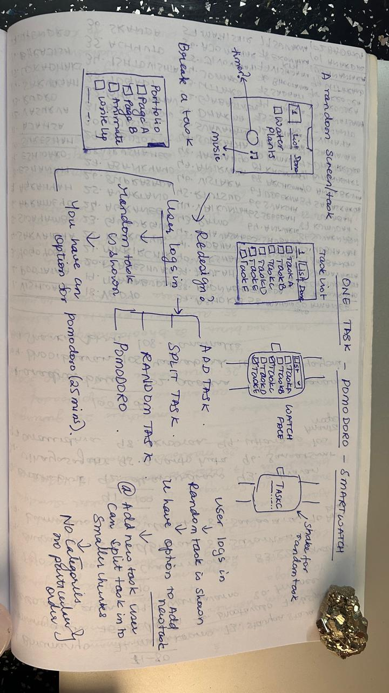

One Task
The Ultimate Unitasking App
We have often done a lot of multitasking, but at some point, the tasks overburden and we end up doing nothing! I teamed up with a developer to create an app that would help users focus on single tasks and move a lot of tasks to closure!
PROJECT DURATION:
2 Months - Design and Development
ROLE:
Product Design, Interaction Design, User Research, Usability Testing
DESIGN TOOLS:
Figma, Balsamiq
DELIVERABLES:
Initial Mockups, High Fidelity Wireframes, Minimal Screens, Persona Chart
USER RESEARCH
After discussing with multitaskers, it was clear that mindfulness and one-task-at-a-time practices were essential. This led to the creation of two distinct personas, highlighting the need for One Task!

USER FLOW

The design process began with sketching hand-drawn flowcharts, enabling quick iterations and a clear direction for the app's functionalities.

Breaking Down Overwhelming Tasks
- Empathizing with the User: Breaking down projects into smaller tasks.
- Balsamiq Wireframe: Designed wireframes focusing on tabs like 'Open Tasks,' 'One Task,' and 'Completed Tasks.'
- One Task Tab: Displays one task with a randomization option for focus.
- Completed Tasks Tab: Tracks progress and accomplishments.
Figma Mockups: Finalizing the Vision
- Design Process: Created collaborative screens in Figma.
- Prototyping: Developed an interactive prototype using InVision.
- Development Approach: Minimalistic four-screen design for user-friendly experience.

Lessons Learned
- Gained insights into designing within time constraints.
- Recognized the critical role of UX in even simple apps.
Next Phase
We are collaborating with a smartwatch company to develop a smartwatch version of the app, awaiting further communication for progress.
